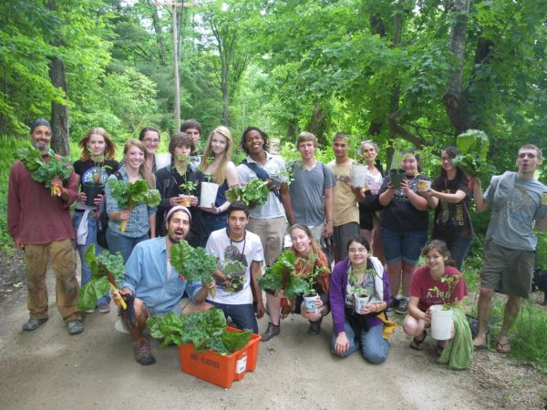

Seeds of Solidarity Education Center is non-profit organization in Orange, MA that ‘awakens the power of youth, schools, and families to Grow Food Everywhere to transform hunger to health, and create resilient lives and communities.’
Check out our 2019 Seeds of Solidarity workshops and events for youth and adults.
We are excited to announce the publication of Making Love While Farming:A Field Guide to a Life of Passion and Purpose, by Seeds of Solidarity founders Ricky Baruch and Deb Habib, forthcoming from Levellers Press in March, 2019. Check out MakingLoveWhileFarming.org for excerpts, advance praise, and to be notified of the book release and related events. And, please visit the NEW website and facebook (with events and inspiration. Book release events are now announced and with more being added every week. MakingLoveWhileFarming is on Instagram too!
Enjoy our 2018/19 newsletter filled with concrete ideas and inspiration. And, please read and enjoy the photos in our appeal letter to learn of all we’ve accomplished and blossoming programs. We would be so grateful for your tax-deductible gift. Please click here for our secure giving portal.
Seeds of Solidarity Education Center is based at Seeds of Solidarity Farm, a 30 acre site and family farm. Long abandoned, the site is now vibrant and healing with abundant no-till gardens, solar greenhouses glowing with healthy greens, and energy efficient and artistic buildings. All electricity for the farm, education center, home and farmstand is from the sun. We are located at 165 Chestnut Hill Road, Orange, MA where you will also find our seasonal farmstand stocked with fresh greens and produce.
Regenerate soil, restore climate and revitalize community; DIY with our NEW Video on the No-till Cardboard Method.
Get Info on our events like our Solidarity Saturday visiting days and Grow Food Everywhere workshops. Enjoy reading ‘Farming in Solidarity,’ a Huffington Post interview with Seeds of Solidarity founders Ricky Baruc and Deb Habib as well as many other free resources and publications. Enjoy a youth made video that shows a day in the life of our SOL Garden program for teens. With your enthusiastic, heart-felt reviews, we are a Top Non-Profit by greatnonprofits.org. Read our 5-star reviews. We are truly grateful for your interest in our organization.